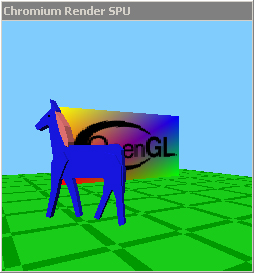
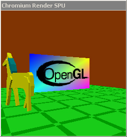

This web page will step you through the creation of the "invert" SPU. This SPU will modify the OpenGL stream so that all of the colors are inverted. Although this is a toy example, it shows the power of Chromium's modularity, and can be used as a starting point for more complex SPU's.
This step is very simple. Change to the cr/spu directory,
and type the following commands:
cp -r template invertcd invertpython gen_template.py invertThe first command will make a copy of the "template" SPU in a directory cr/spu/invert.
The gen_template.py script will rename all of the template files to
be consistent with your chosen SPU name (in this case, "invert"), and
it will also change all of the variable names and other identifiers in the C
code and header files to be consistent with the new SPU name.
This process will leave you with seven files:
Makefile: A properly formed Makefile for Chromium's build
system.gen_template.py: The script you just ran. You can
delete it now; it will no longer be needed.invertspu.c: This file contains the list of functions that
the Invert SPU will implement. Currently that list is empty.invertspu.def: A list of exported symbols for Windows.
SPU's only ever export one function, and it's already listed in this file,
so you should never have to change this. If you're not building on
Windows, you really don't care about this file.invertspu.h: A header file containing a global structure to
represent the state of this SPU, as well as a couple of pre-defined function
declarations.invertspu_config.c: Code to communicate with the mothership
to gather configuration. Currently the code in this file just connects
to the mothership and immediately quits. invertspu_init.c: Startup and initialization code for this
SPU. These entry points will be called by the SPU loader before any
application code is run, so they are the best place to contact the
mothership (already implemented in the template), initialize any external
resources or libraries that need initializing, etc.Assuming that the rest of the Chromium system has been built already, you should be able to type "make" at this point, and the SPU should compile without warnings. If it doesn't, something is horribly wrong.
For the most part, this SPU initializes itself. However, there are two small changes to be made to the initialization routine.
First, we must introduce the notion of SPU inheritance. A SPU
need not implement the full OpenGL API. In fact, most SPU's will
not. Instead, a SPU can implement a subset of the OpenGL API, and the
remainder of the API can be obtained from a "SuperSPU". For
example, a SPU that is designed to only accept calls to glDrawPixels
could get the rest of its API from the "error" SPU, which will print
an error message on any OpenGL function call. The "error" SPU is
in fact the default SuperSPU.
In the case of the Invert SPU, we will inherit from the "passthrough"
SPU, since we want to modify an OpenGL stream as it is made. To do this,
edit the file invertspu_init.c. In the function "SPULoad",
you will see the line:
| super = NULL; |
Change this line to:
| super = "passthroughspu"; |
That's all there is to it. If you've been paying really close attention, you might think that we need to check to make sure this SPU is loaded with a child (i.e., it does not appear at the end of a SPU chain). This check is actually performed by the "passthrough" SPU when it is loaded, so another check would be redundant.
Notice two other things about this initialization file, and in particular the
function SPUInit:
invert_spu" that
holds all information pertaining to this instance of this SPU.invert_spu
global variable. This is how we will pass functions through once we
have modified their arguments.You should still be able to compile the invert SPU after this step.
Open the file invertspu.c. You will see the following code at the bottom of the file:
| SPUNamedFunctionTable invert_table[] = { { NULL, NULL } }; |
This table is a NULL-terminated list of { name, function }
pairs that will be parsed by the SPU loader to build a SPU dispatch table.
Therefore, order does not matter. For this SPU, we will want to implement
those functions that affect the color. There are actually a lot of them,
so for the purposes of this example, we'll only implement a few: glColor3f,
glClearColor, and glMaterialfv. For
this step, all we have to do is add these function names and pointers to our
implementation in this list. Change the above code to:
| SPUNamedFunctionTable invert_table[] = { { "Color3f", (SPUGenericFunction) invertColor3f }, { "ClearColor", (SPUGenericFunction) invertClearColor }, { "Materialfv", (SPUGenericFunction) invertMaterialfv }, { NULL, NULL } }; |
Notice two things about this table: First, the function names on the left do not begin with "gl". Second, the functions on the right (which we haven't implemented yet) must be cast to "SPUGenericFunction" in order to properly build this table. This has the unfortunate side effect that you can easily get the number or type of arguments to a function wrong, and the compiler will not catch the error, so be careful.
After this step, you will not be able to compile the SPU, because the
functions invertColor3f, invertClearColor, and invertMaterialfv
are not defined.
We will implement the three needed functions at the top of the file invertspu.c,
since that's where they are referred to. In a larger SPU, it you would
probably want to break these things into multiple files.
Immediately before the table you created in step 3, add the lines:
| void INVERTSPU_APIENTRY invertColor3f( GLfloat red, GLfloat green, GLfloat blue ) { } |
(We will fill in the body in a minute). The strange identifier "INVERTSPU_APIENTRY",
defined in the header invertspu.h, is necessary to ensure correct
operation on Windows. On Windows, it is defined to "__stdcall",
which matches the calling conventions used by the system's OpenGL
implementation. This is necessary since the OpenGL replacement DLL will
simply jump to this function instead of calling it, so the calling
conventions need to match those expected by the calling application. On
non-Windows machines, this identifier has no effect. See the header file
for the entire definition.
Important: Every OpenGL replacement function needs to use this identifier.
The definition of the other two functions is similarly straightforward:
| void INVERTSPU_APIENTRY invertClearColor( GLfloat red, GLfloat green, GLfloat blue, GLfloat alpha ) { } |
| void INVERTSPU_APIENTRY invertMaterialfv( GLenum face, GLenum mode, const GLfloat *param ) { } |
Note that the SPU may still not compile at this point, because the unused
variables may generate warnings (depending on your compiler), and the default
Chromium build system configuration files (in cr/config) consider
warnings to be errors.
The final step in our SPU is to actually implement our filters. Let's
look at the implementation of glColor3f first.
All we need to do is subtract the specified colors from unity before passing
them to our child. Since our SuperSPU already handles passing parameters
to a child SPU, all we need to do is call our SuperSPU's implementation of Color3f
with modified arguments. Therefore, the full body for invertColor3f
should look like:
| void INVERTSPU_APIENTRY invertColor3f( GLfloat red, GLfloat green, GLfloat blue ) { invert_spu.super.Color3f( 1-red, 1-green, 1-blue ); } |
That's all there is to it! Note that this would have been exactly equivalent to calling:
| invert_spu.child.Color3f( 1-red, 1-green, 1-blue ); |
But I prefer calling the passthrough SPU as a (marginally) cleaner design.
The implementation of invertMaterialfv is slightly more
interesting, because it needs to behave differently depending on what the "mode"
parameter is. In particular, if mode is GL_SHININESS,
there is only one parameter, and we shouldn't invert it. Otherwise, there
are four parameters, and they should get inverted. To do this, we make a
local array of four float variables, invert the provided
parameters, and pass them to the SuperSPU.
If the user specifies the material shininess, we leave the parameters alone
and just dispatch them to the SuperSPU verbatim:
| void INVERTSPU_APIENTRY invertMaterialfv( GLenum face, GLenum mode, const GLfloat *param ) { if (mode != GL_SHININESS) { GLfloat local_param[4]; local_param[0] = 1-param[0]; local_param[1] = 1-param[1]; local_param[2] = 1-param[2]; local_param[3] = 1-param[3]; invert_spu.super.Materialfv( face, mode, local_param ); } else { invert_spu.super.Materialfv( face, mode, param ); } } |
The implementation of invertClearColor is almost identical to
the implementation of invertColor3f, and is not shown here.
All that's missing at this point is a configuration script that references
our new SPU. For this example, we'll just modify the crdemo.conf
file that was described in the "Configuration
Scripts" section of this documentation. Change directories to cr/mothership/configs
and copy crdemo.conf to invert.conf.
All that's required is a single call to the AddSPU method of the
client node. Around lines 17 and 18, where the server and client SPU's are
created, add the line:
| invert_spu = SPU( 'invert' ) |
Then, immediately before the client SPU is added to the client node (line 29 in the unmodified crdemo.conf), add the line:
| client_node.AddSPU( invert_spu ) |
It is important that the invert SPU comes before the client SPU in the configuration script, since that is the SPU chain order that will be created when the application starts up. Your resulting script should look like this.
|
 |
 |
| "bluepony" without the Invert SPU | "bluepony" with the Invert SPU |
OpenGL is a tricky business, and getting simple things right can sometimes be a little hard. For example, what if the user never sets the color, material, or clear color, and simply uses the defaults? Surely we'd want those colors to be inverted too, right?
The best way to do this is to put a few calls in the SPUInit
function in invertspu_init.c. Looking in spu/state_tracker/state_lighting.c
reveals that OpenGL's default diffuse material is {0.8, 0.8, 0.8, 1}, so
declare the following variable at the top of SPUInit:
| GLfloat diffuse[4] = { 1-0.8f, 1-0.8f, 1-0.8f, 1.0f }; |
Now add the following three calls immediately before the return at the end of
the SPUInit function:
| invert_spu.super.Color3f( 0, 0, 0 );
// default color is white invert_spu.super.ClearColor( 1, 1, 1, 1 ); // default clear color is black invert_spu.super.Materialfv( GL_FRONT_AND_BACK, GL_DIFFUSE, diffuse ); |
A cleaner design would have been to call the functions from step 5 with the OpenGL defaults, so we don't have inverting logic in too many places. Also, careful implementors will want to invert the default specular, emission, and ambient colors as well.
A good program to test this SPU with is the "bluepony" demo that
comes with GLUT. Notice that the pony is a different color, as is the
clear color. However, the floor is still the same, because those colors
were specified with glColor4fv, which we did not implement.
For an example of how to write this SPU in a more complete and correct way, see
"Automatically generating code for a
SPU".